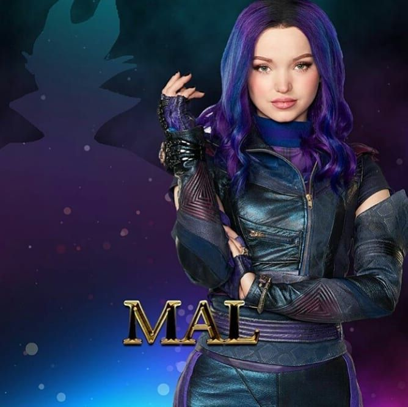

MAL
MAL (Dove Cameron)
Lady Mal Igna es la protagonista principal de las películas de Disney Channel Descendientes, Descendientes 2, Descendientes: Mundo de Villanos y Descendientes 3. Ella es la hija de Maléfica y Hades.Como líder natural, Mal se encarga de llevar a cabo el malvado plan de su madre para robar la varita mágica de la Hada Madrina y disfruta dibujar y lanzar hechizos (pero solo si es necesario). A medida que la serie avanza, Mal abandona gran parte de sus miedos y metas, poniéndose en sintonía con su verdadero yo; así abandona la vida hueca del mal, por una vida de ser bueno. Con amistad y amor, Mal terminó de llenar el agujero en su corazón que no podía satisfacerse con lo que su madre le había enseñado. Le gusta hacer graffitis con su nombre y con sus amigos.
- Personalidad
- Astuta.
- Inteligente.
- Despistada.
- Lider nato.
- Habilidad para lanzar hechizos
- Descripción física
- Cabello morado oscuro con reflejos de tonos mas claros.
- Cabello rizado
- Ojos verdes
- Estatura media
